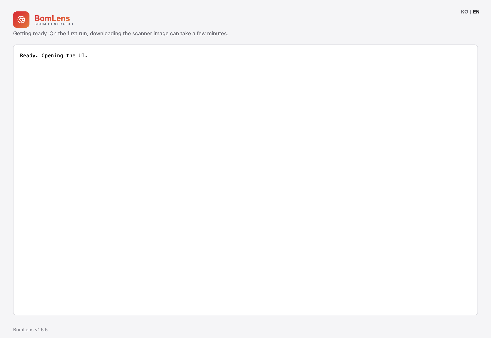
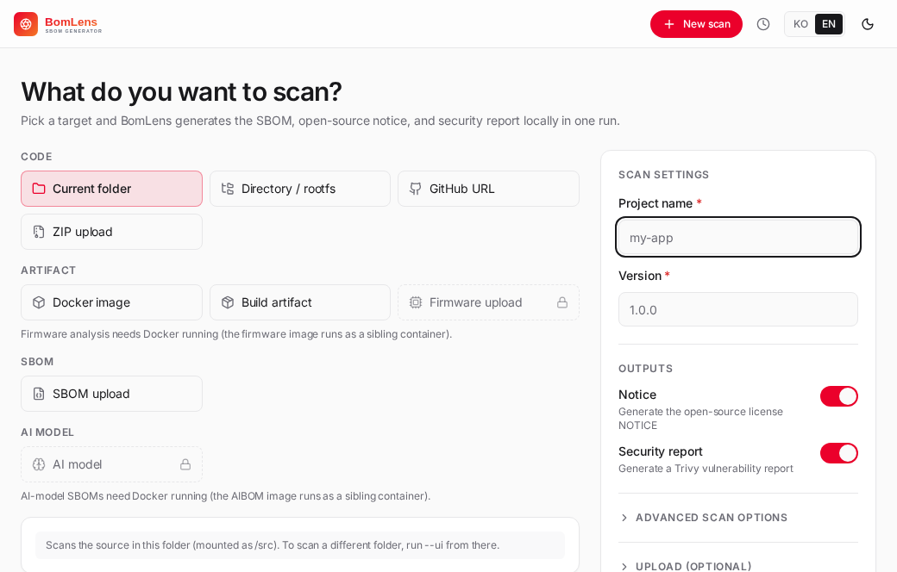

Getting started¶
From install to your first SBOM, step by step. The fastest path needs no command line — download the app and double-click.
Just want an SBOM or a notice quickly, no commands? Start with the no-CLI quick start.
BomLens runs on a Docker engine, but the desktop app and web UI set it up and pull the image for you. You only manage Docker yourself for the CLI — see Requirements below if you still need to install one.
Start without the command line (recommended)¶
Download BomLens for Windows (.exe) and double-click it; the UI opens with no console window. On first run it checks Docker, pulls the scanner image (about 250 MB), and opens http://localhost:8080. The app is unsigned for now, so if Windows SmartScreen warns, click More info, then Run anyway. A click-by-click walkthrough is in the no-CLI quick start.

Prefer scripts over an installer? The sbom-ui.bat alternative is covered step by step in Path B of the no-CLI quick start.
Web UI¶
No commands beyond launching it: run in the browser, scan, and download results.
git clone https://github.com/sktelecom/bomlens.git && cd bomlens
./scripts/scan-sbom.sh --ui # opens http://localhost:8080; results save under the current folder
# Windows: double-click scripts\sbom-ui.bat
The folder you run from is the output base — each scan saves to a {Project}_{Version}/ subfolder under it (details in Where outputs go). If the port is taken, prefix UI_PORT=9090. To scan the current folder as the source, run from that project folder; for a GitHub URL, ZIP, SBOM, firmware, or Docker image you supply the input in the UI, so any folder works.

- Enter a project name and version.
- Pick a scan target: current folder, GitHub URL, ZIP upload, SBOM upload, firmware upload, or Docker image.
- Click Run scan — logs stream live.
- View or download the SBOM, the notice, the risk report, and the security report.
Screen layout and per-target details are in the web UI reference.
Your first SBOM (CLI)¶
Advanced — for automation and CI. Run from the cloned repo. The command below scans the bundled Node.js example; point --target at your own folder, or drop --target to scan the current directory instead.
# All deliverables for the bundled example project
./scripts/scan-sbom.sh --project "MyApp" --version "1.0.0" --target examples/nodejs --all --generate-only
This produces a CycloneDX SBOM, an open-source notice, a security report, and a risk report named MyApp_1.0.0_…, all in a MyApp_1.0.0/ subfolder of the current directory.
# From a GitHub URL, without cloning first
./scripts/scan-sbom.sh --project "MyApp" --version "1.0.0" --git "https://github.com/org/repo" --all --generate-only
Other inputs — a ZIP source (--target app.zip), an existing SBOM (--analyze sbom.json), firmware (--target dev.bin --firmware), a Docker image (--target nginx:latest) — are in the input-scenarios guide.
--generate-onlysaves the outputs locally without uploading (the vulnerability scan still runs).--allproduces the notice, the SBOM, and the risk report in one run. The full options are in the CLI reference; to upload the result to TRUSCA or a Dependency-Track server, use--trusca <project_id>(orUPLOAD_TARGET) — the steps are in the upload guide.
Understanding the results¶
Each scan lands in a {Project}_{Version}/ subfolder, and the files inside are named {Project}_{Version}_…, for example MyApp_1.0.0/MyApp_1.0.0_bom.json:
| File | What it is |
|---|---|
{Project}_{Version}_bom.json |
the SBOM (CycloneDX 1.6) |
{Project}_{Version}_NOTICE.{txt,html} |
open-source notice (고지문) grouped by license |
{Project}_{Version}_security.{json,md,html} |
Trivy vulnerability report |
{Project}_{Version}_risk-report.{md,html} |
open-source risk report (licenses + vulnerabilities), generated by default |
The SBOM is CycloneDX 1.6 JSON:
{
"bomFormat": "CycloneDX",
"specVersion": "1.6",
"version": 1,
"metadata": {
"timestamp": "2026-01-15T10:30:00Z",
"component": {
"type": "application",
"name": "MyApp",
"version": "1.0.0"
}
},
"components": [
{
"type": "library",
"name": "express",
"version": "4.18.2",
"purl": "pkg:npm/express@4.18.2",
"licenses": [
{ "license": { "id": "MIT" } }
]
}
]
}
Key fields¶
| Field | Meaning |
|---|---|
metadata.component |
the scanned project (name, version) |
components |
the open-source components found |
components[].purl |
Package URL — the unique package identifier |
components[].licenses |
license info (SPDX ID) |
Quick checks on the SBOM¶
The examples below use jq. On WSL2 (Ubuntu) install it with sudo apt-get install jq, on Windows Git Bash with winget install jqlang.jq. If installing it is a hassle, the web UI overview shows the component count and licenses directly:
# Component count
jq '.components | length' MyApp_1.0.0/MyApp_1.0.0_bom.json
# Unique licenses
jq '[.components[].licenses[]?.license.id] | unique' MyApp_1.0.0/MyApp_1.0.0_bom.json
Requirements¶
BomLens needs only a Docker engine — not a specific product.
| Item | Minimum |
|---|---|
| Docker | 20.10+ |
| Disk | 4 GB+ (for the Docker image) |
| OS | Linux, macOS, Windows |
| Arch | AMD64, ARM64 |
If you already run a Docker engine (Docker Desktop, Rancher Desktop, docker-ce in WSL2, anything), just confirm it works:
Installing Docker on Windows for the first time¶
Docker Desktop is simplest, but it needs a paid license above a certain organization size. Free options:
| Option | Notes |
|---|---|
| WSL2 + docker-ce (free) | Install docker-ce inside WSL2 Ubuntu and run scan-sbom.sh there. No .bat, no Windows named pipe, no path-conversion issues. CLI only — does not work with the .exe installer flow above. |
| Rancher Desktop (free, GUI) | A drop-in GUI replacement for Docker Desktop with a docker CLI. Works with the .bat double-click and desktop-app flows. |
| Docker Desktop | Easiest, but check licensing for organizational use. |
If you started with the installer (the .exe), install Rancher Desktop or Docker Desktop instead of WSL2 + docker-ce — the desktop app doesn't yet know how to reach Docker running inside WSL2, so it will keep reporting "Docker isn't installed" even after you set that up.
WSL2 + docker-ce, the short version (admin PowerShell):
Then inside WSL (Ubuntu):
sudo apt-get update && curl -fsSL https://get.docker.com | sudo sh
sudo usermod -aG docker "$USER" # log out and back in to apply
docker pull ghcr.io/sktelecom/bomlens:latest
Clone the repo inside WSL and run ./scripts/scan-sbom.sh ... as above. For the CLI on Windows without WSL2, install Git for Windows (Git Bash) and use scripts\scan-sbom.bat.
Next steps¶
| Goal | Doc |
|---|---|
| Input forms (GitHub, ZIP, SBOM, firmware) | Input scenarios |
| Notice, security & risk reports, web UI | Reports guide |
| Every option and CI/CD | CLI reference |
| Language example projects | Ecosystems |
| Internals | Architecture |
| Contributing | Contributing guide |
Related: CLI reference | Input scenarios